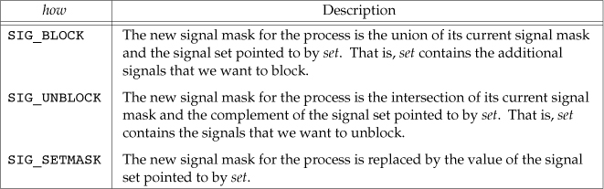
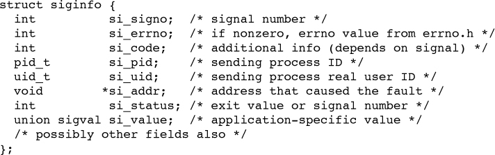

Signal
signals
- SIGINT This signal(Control-C) is sent to all processes in the foreground process group
- SIGTSTP This interactive stop signal is generated by the terminal driver when we press the terminal suspend key (Control-Z).
- SIGSTOP This job-control signal stops a process. And can not be caught or ignored.
- SIGKILL This signal is one of the two that can’t be caught or ignored. It provides the system administrator with a sure way to kill any process.
- SIGTERM This is the termination signal sent by the kill(1) command by default.
signal function
#include <signal.h> /* defined by ISO C */ void (*signal(int signo, void (*func)(int)))(int); typedef void Sigfunc(int); Sigfunc *signal(int, Sigfunc *);
return value
The semantics of signal differ among implementations, we must use the sigaction function instead.
10.4. Unreliable Signals
10.5. Interrupted System Calls
10.6. Reentrant Functions
10.7. SIGCLD Semantics
10.8. Reliable-Signal Terminology and Semantics
10.9. kill and raise Functions
10.10. alarm and pause Functions
10.11. Signal Sets
A data type to represent multiple signals. The number of different signals can exceed the number of bits in an integer, o in general we can’t use an integer to represent the set with one bit per signal.
#include <signal.h>
int sigemptyset(sigset_t *set);
int sigfillset(sigset_t *set);
int sigaddset(sigset_t *set, int signo);
int sigdelset(sigset_t *set, int signo);
All four return: 0 if OK, –1 on error
int sigismember(const sigset_t *set, int signo);
Returns: 1 if true, 0 if false, –1 on error
sigset_t /* define by POSIX.1 */
10.12. sigprocmask Function
The signal mask of a process is the set of signals currently blocked from delivery to that process.
#include <signal.h>
int sigprocmask(int how, const sigset_t *restrictset,sigset_t *restrict oset);
Returns: 0 if OK, –1 on error
- If oset is a non-null pointer, the current signal mask for the process is returned through oset.
- If set is a non-null pointer, the how argument indicates how the current signal mask is modified.
- If set is a null pointer, the signal mask of the process is not changed, and how is ignored.

10.13. sigpending Function
The sigpending function returns the set of signals that are blocked from delivery and currently pending for the calling process.
#include <signal.h>
int sigpending(sigset_t *set);
Returns: 0 if OK, –1 on error
10.14. sigaction Function
The sigaction function allows us to examine or modify (or both) the action associated with a particular signal.This function supersedes the signal function.
#include <signal.h> int sigaction(int signo, const struct sigaction *restrict act,struct sigaction *restrict oact);
- If the act pointer is non-null, we are modifying the action.
- If the oact pointer is non-null, the system returns the previous action for the signal through the oact pointer.
- Once we install an action for a given signal, that action remains installed until we explicitly change it by calling sigaction.


The sa_sigaction field is an alternative signal handler used when the SA_SIGINFO flag is used with sigaction.
